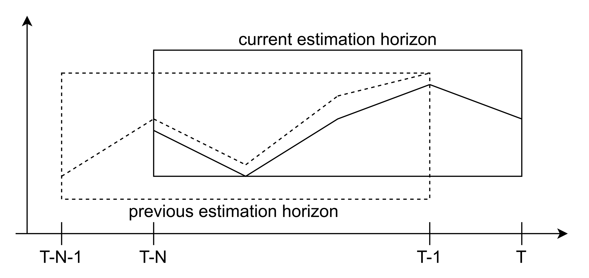

Observer module¶
The HILO-MPC Observer module contains several state (and parameter) observers. Observers are used to infer states and parameters from measurements. For a more detailed description of the methods refer to the API.
The Observer module contains the following classes:
Moving Horizon Estimator (MHE)
Kalman Filter (KF)
Extended Kalman Filter (EKF)
Unscented Kalman Filter (UKF)
Particle Filter (PF)
Moving Horizon Estimator¶
Moving horizon estimation (MHE) is an optimization-based state estimation technique. Utilizing a finite sequence of previously observed measurements, which inherently include noise and other inaccuracies, MHE estimates the current state of the system. In the toolbox, the class MHE can set a Moving Horizon Estimator where we need to define the following elements:
A horizon length.
An objective function.
constraints (optional)
Horizon length¶
To achieve an effective state estimate, the ideal approach involves considering all past measurements from the initial time up to the present, leading to what is referred to as a full information estimator. Unfortunately, the computational complexity becomes prohibitive as the number of measurements increases. Given this challenge, moving horizon estimation uses only a fixed number \(N\) of past measurements. At each time step, the optimal estimated state trajectory on the current estimation horizon is determined by the past \(N\) measurements. When a new measurement arrives at the instant \(T\), the estimation horizon moves forward one time step and the oldest measurement from time \(T-N-1\) is discarded. The size of the optimization problems remains constant. The moving process is shown in the following figure.
Thus horizon length is an important parameter in terms of accuracy and computational complexity. The class provides the horizon property
to set this parameter.
mhe = MHE(model)
mhe.horizon = 10
Objective function¶
We assume that the current instant is \(T\) and the horizon is \(N\). The objective of MHE is to find an initial state \(x_{T - N}\) and the disturbance sequence \(\mathbf{w} = [w_{T - N}, w_{T - N + 1}, \dots, w_{T-1}]^T\) so that the objective function is minimized which can be formulated as follows:
The objective function is constructed as follows:
The objective function \(\Phi_T\) contains two parts, the stage cost function \(L\left ( v_k,w_k\right )\) and the arrival cost \(Z_{T-N}\left ( x_{T-N} \right )\). The stage cost function \(L\left ( v_k,w_k\right ) = \left\|v_{k} \right\|_{R^{-1}}^{2}+\left\|w_{k} \right\|_{Q^{-1}}^{2}\) is commonly quadratic and contains two parts, namely measurement noise cost \(\left\|v_{k} \right\|_{R^{-1}}^{2}\) and state noise cost \(\left\|w_{k} \right\|_{Q^{-1}}^{2}\), \(Q\) and \(R\) are the covariance matrix of the state noise and measurement noise. The arrival cost is \(Z_{T-N}\left( x_{T-N} \right) = \left\| {x_{T-N} - \bar{x}_{T-N}} \right\|_{\Pi^{-1}}^{2}\). \(\Pi\) is the covariance matrix of the initial guess.
The class MHE uses quad_stage_cost and quad_arrival_cost to construct a quadratic objective function:
quad_stage_cost.add_state_noise is to set the state noise cost \(\left\|w_{k} \right\|_{Q^{-1}}^{2}\) and the parameter weights is the confidence matrix of the state noise which is
often set as the inverse of the covariance matrix of the state noise \(Q^{-1}\)
quad_stage_cost.add_measurements is to set the measurement noise cost \(\left\|v_{k} \right\|_{R^{-1}}^{2}\) and the parameter weights is the confidence matrix of the measurement noise which is
often set as the inverse of the covariance matrix of the measurement noise \(R^{-1}\)
quad_arrival_cost.add_states is to set the arrival state cost \(Z_{T-N}\left ( x_{T-N} \right )\). The parameter weights is the confidence matrix for the knowledge of the initial guess
and the parameter guess is set as the initial guess.
For example, if we know the variance of the measurement noise is \(0.25^2\), the covariance matrix of the state noise is \(\begin{bmatrix} (0.001)^2 & 0 & 0 \\ 0 & (0.001)^2 & 0 \\ 0 & 0 & (0.001)^2 \end{bmatrix}\) the covariance matrix of the initial guess is \(\begin{bmatrix} (0.5)^2 & 0 & 0 \\ 0 & (0.5)^2 & 0 \\ 0 & 0 & (0.5)^2 \end{bmatrix}\). The code could be:
mhe = MHE(model)
mhe.quad_arrival_cost.add_states(weights=[1/(0.5**2), 1/(0.5**2), 1/(0.5**2)], guess=x0_est)
mhe.quad_stage_cost.add_measurements(weights=[1/(0.25**2)])
mhe.quad_stage_cost.add_state_noise(weights=[1/(0.001**2), 1/(0.001**2), 1/(0.001**2)])
Constraints¶
The class provides a method set_box_constraints to set the constraints:
The parameter x_ub /x_lb is the upper/lower bound of the dynamical state.
The parameter w_ub /w_lb is the upper/lower bound of the input.
The parameter p_ub /p_lb is the upper/lower bound of the parameter.
The parameter z_ub /z_lb is the upper/lower bound of the algebraic state.
For example, if we want to set the constraint that all the add_states(3 dynamical states) must be positive, the code could be :
mhe = MHE(model)
mhe.set_box_constraints(x_lb=[0, 0, 0])
Non-uniform sampling intervals¶
Multi-rate measurements¶
Kalman Filter¶
The class KalmanFilter (alias KF) implements the Kalman filter developed by Rudolf E. Kálmán. To set up the Kalman filter you need an already set up Model instance. Additionally you might want to supply a plot backend (via the plot_backend keyword argument) in order to visualize the estimation results later on. At the moment only Matplotlib and Bokeh are supported for plotting. The Kalman filter can be initialized as follows:
from hilo_mpc import KF
# Initialize Kalman filter
kf = KF(model, plot_backend='bokeh')
Required information, like e.g. the model dynamics or the sampling time, will be automatically extracted from the Model instance.